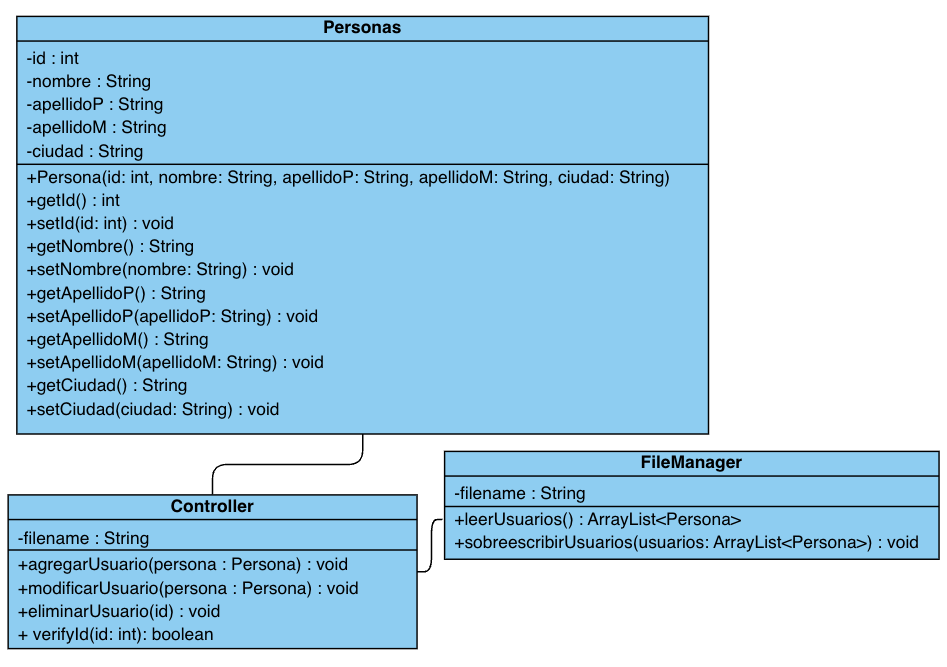

PERSONAS
REPORTE DE PRÁCTICA
NOMBRE:
JUAN ALBERTO ARVIZU CASTILLO
SEMESTRE:
2do Semestre
CARRERA:
INGENIERIA EN SISTEMAS COMPUTACIONALES
INTRODUCCIÓN
En el presente informe se detalla la práctica realizada para implementar la clase abstracta Figura, siguiendo las instrucciones dadas en clase. Esta práctica se enmarca en el contexto de la programación orientada a objetos, con el objetivo de entender los conceptos de abstracción, herencia y polimorfismo, así como su aplicación en la resolución de problemas relacionados con el cálculo de áreas y perímetros de diversas figuras geométricas.
ÍNDICE
TEORÍA (CONCEPTOS, EJEMPLOS, ETC)
Conceptos
Clases Abstractas:
Son aquellas que no pueden ser instanciadas directamente, sino que sirven como plantillas para otras clases. Pueden contener métodos abstractos, es decir, métodos que no tienen una implementación definida en la clase abstracta, dejando su implementación a las clases hijas.
Polimorfismo:
Permite que objetos de diferentes clases respondan al mismo mensaje, comportándose de manera distinta según su tipo.
Encapsulamiento:
Es el mecanismo que permite ocultar la implementación interna de un objeto y restringir el acceso a sus datos, solo permitiendo interactuar con ellos a través de métodos específicos.
@Override:
Indica que un método de una clase hija está sobrescribiendo (o implementando de forma específica) un método de la clase padre. Esto significa que el método en la clase hija tiene la misma firma (nombre y parámetros) que el método en la clase padre.
Al utilizar @Override, el compilador verifica que estés realmente sobrescribiendo un método existente en la superclase, ayudándote a evitar errores de sintaxis.
EJEMPLO
class Animal {
void hacerSonido() {
System.out.println("Sonido de animal genérico");
}
}
class Perro extends Animal {
@Override
void hacerSonido() {
System.out.println("Guau");
}
}
extends:
Es un operador en Java que se utiliza para verificar si un objeto es una instancia de una clase, una subclase o una interfaz. Retorna true si el objeto es una instancia del tipo especificado o de una de sus subclases, y false en caso contrario.
instanceof:
Es una palabra clave en Java que se utiliza en la declaración de clases para indicar que una clase es una subclase de otra clase. En otras palabras, una clase que "extiende" otra clase hereda los campos y métodos de la clase extendida.
DESARROLLO
ENUNCIADO
La problemática que se resuelve no representa una dificultad grave, sino más bien una oportunidad para desarrollar una herramienta de apoyo.
Se busca implementar una jerarquía de clases que representen diversas figuras geométricas. Estas figuras geométricas, que incluyen círculos, cuadrados, triángulos, pentágonos, entre otras, deben depender de una clase base llamada Figura.
Cada figura debe contar con métodos para calcular tanto su área como su perímetro.
Muchas de las veces los usuarios tienen la dificultad o requieren de la practicidad de tener un software o app o hasta un simple script que les facilite su tarea diaria o alguna tarea que sea muy repetitiva, en este caso esta practica de figuras
Al tu ingresar al script en este caso te muestra un menu con varias opciones (Circulo, Cuadrado, Triangulo, Pentagono) y al elegir uno de esos te pide los requisitos necesarios para realizar el calculo de el area de la figura seleccionada, retornando asi el area de la figura seleccionada.
DIAGRAMA DE FLUJO
DIAGRAMA DE CLASES

FUENTE: Aportada por el profesor
PRUEBAS FUNCIONALES


CÓDIGO JAVA
MAIN
import java.util.Scanner;
public class Main {
static Scanner rc = new Scanner(System.in);
public static void main(String[] args) {
int op = 0;
do {
System.out.println("---- FIGURAS -----");
System.out.println("1.- Circulo");
System.out.println("2.- Cuadrado");
System.out.println("3.- Triangulo");
System.out.println("4.- Pentagono");
System.out.println("0.- Salir");
System.out.print("- Selecciona una opcion -> ");
op = rc.nextInt();
switch (op) {
case 0:
System.out.println("---------------------------------------");
System.out.println("¡Programa finalizado con éxito!");
break;
case 1:
System.out.println("--------------| CÍRCULO |--------------");
System.out.println("Ingrese el radio del círculo: ");
if (rc.hasNextDouble()) {
double radC = rc.nextDouble();
Circulo circulo = new Circulo(radC);
System.out.println("El área del círculo es: " + circulo.area());
} else {
System.out.println("El valor ingresado no es válido.");
rc.next(); // Limpiar el buffer del scanner
}
System.out.println("---------------------------------------");
break;
case 2:
System.out.println("--------------| CUADRADO |--------------");
System.out.println("Ingrese un lado del cuadrado: ");
if (rc.hasNextDouble()) {
double ladC = rc.nextDouble();
Cuadrado cuadrado = new Cuadrado(ladC);
System.out.println("El área del cuadrado es: " + cuadrado.area());
} else {
System.out.println("El valor ingresado no es válido.");
rc.next(); // Limpiar el buffer del scanner
}
System.out.println("---------------------------------------");
break;
case 3:
System.out.println("-------------| TRIÁNGULO |-------------");
System.out.println("Ingrese la base del triángulo: ");
if (rc.hasNextDouble()) {
double baseT = rc.nextDouble();
System.out.println("Ingrese la altura del triángulo: ");
if (rc.hasNextDouble()) {
double altT = rc.nextDouble();
Triangulo triangulo = new Triangulo(baseT, altT);
System.out.println("El área del triángulo es: " + triangulo.area());
} else {
System.out.println("El valor ingresado no es válido.");
rc.next(); // Limpiar el buffer del scanner
}
} else {
System.out.println("El valor ingresado no es válido.");
rc.next(); // Limpiar el buffer del scanner
}
System.out.println("---------------------------------------");
break;
case 4:
System.out.println("-------------| PENTÁGONO |-------------");
System.out.println("Ingrese la longitud de un lado del pentágono: ");
if (rc.hasNextDouble()) {
double longP = rc.nextDouble();
Pentagono pentagono = new Pentagono(longP);
System.out.println("El área del pentágono es: " + pentagono.area());
} else {
System.out.println("El valor ingresado no es válido.");
rc.next(); // Limpiar el buffer del scanner
}
System.out.println("---------------------------------------");
break;
default:
System.out.println("Opción inválida. Por favor, seleccione una opción válida.");
break;
}
} while (op != 0);
rc.close();
}
}
FIGURAS
public abstract class Figura {
protected double x;
protected double y;
public Figura(double x, double y) {
this.x = x;
this.y = y;
}
public abstract double area();
}
CIRCULO
public class Circulo extends Figura {
private double radio;
public Circulo(double radio) {
super(0, 0);
this.radio = radio;
}
@Override
public double area() {
return Math.PI * (radio * radio) ;
}
}
CUADRADO
public class Cuadrado extends Figura {
private double lado;
public Cuadrado(double lado) {
super(0, 0);
this.lado = lado;
}
@Override
public double area() {
return lado * lado;
}
}
PENTAGONO
public class Pentagono extends Figura {
private double lado;
public Pentagono(double lado) {
super(0, 0);
this.lado = lado;
}
@Override
public double area() {
int nlados = 5;
double perimetro = nlados * lado;
double apotema = lado / (2 * Math.tan(Math.PI / nlados));
return 0.5 * perimetro * apotema;
}
}
TRIANGULO
public class Triangulo extends Figura {
private double base;
private double altura;
public Triangulo(double base, double altura) {
super(0, 0);
this.base = base;
this.altura = altura;
}
@Override
public double area() {
return base * altura / 2;
}
}
Conclusiones
En el desarrollo de esta práctica, logre medio entender y creo que tambien supe usar o aplicar los conceptos de clases abstractas, polimorfismo y encapsulamiento. (Que esten bien usados es otra cosa JAJAJAJ) La creacion del menu es la que facilitara la interacción con el usuario y permitira una mejor comprension y funcionamiento del programa o script.
Bibliografía
LAS SIGUIENTES REFERENCIAS SON LINKS CON REDIRECCION.